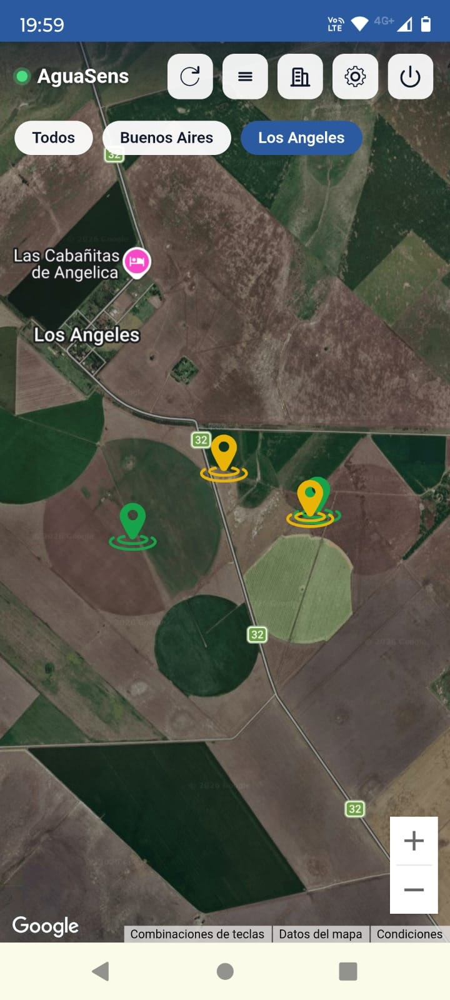
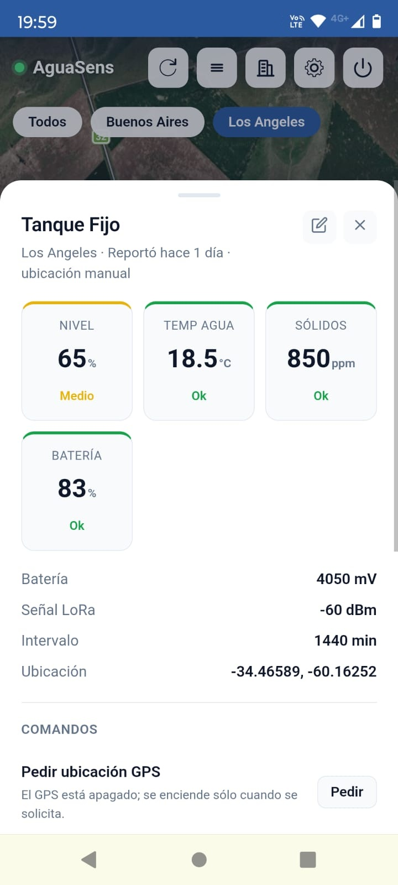

Todo el campoen una pantalla
8 sensores, un solo mapa y alertas al celular.
Semáforo visual
Mapa en tiempo real con el estado de cada sensor. Un vistazo y sabés qué aguada necesita atención.
Cada nodo, al detalle
Tocás un nodo del mapa y ves todas sus mediciones, el estado de la batería y la calidad del enlace.
- Nivel, temperatura del agua y sólidos
- Batería y señal LoRa
- Intervalo de reporte configurable
- Pedido de ubicación GPS a demanda

Nivel de agua
Medición automática. Sabés cuánta agua tiene cada tanque, bebedero o represa sin hacer una sola recorrida. Alerta inmediata cuando el nivel baja del umbral configurado.
Índice de estrés
por calor bovino (THI)
Mide temperatura y humedad ambiente y calcula el estrés térmico del ganado en tiempo real. Recibís alerta antes de que aparezcan los síntomas en el rodeo.
Temperatura del agua
Sensor sumergible que monitorea a qué temperatura está el agua en el tanque. Fundamental en verano para asegurar que el agua esté en condiciones de ser bebida y no limite el consumo del animal.
Y además
Cada nodo reporta su posición. Movés un bebedero y la ubicación se actualiza sola.
Detecta obstrucciones o caídas de rendimiento antes de que falte agua en los tanques.
Supervisa amperaje y voltaje. Previene quemaduras de motor por sobrecarga o trabajo en vacío.
Mide el nivel dinámico del pozo para que la bomba trabaje siempre sumergida.
Registra el movimiento mecánico del molino: si está bombeando cuando hay viento o si requiere mantenimiento.
Todo esto, incluido
- Mapa en tiempo real con semáforo visual de los sensores
- Alertas configurables por nivel mínimo o máximo
- Historial de mediciones
- Dashboard multi-campo y multi-nodo
- Notificaciones por Telegram y/o mail